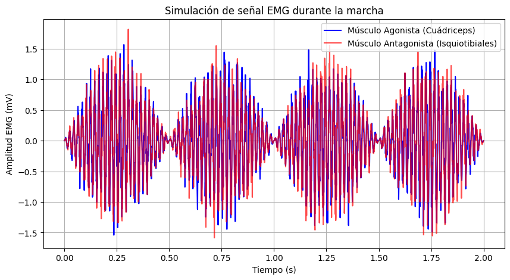
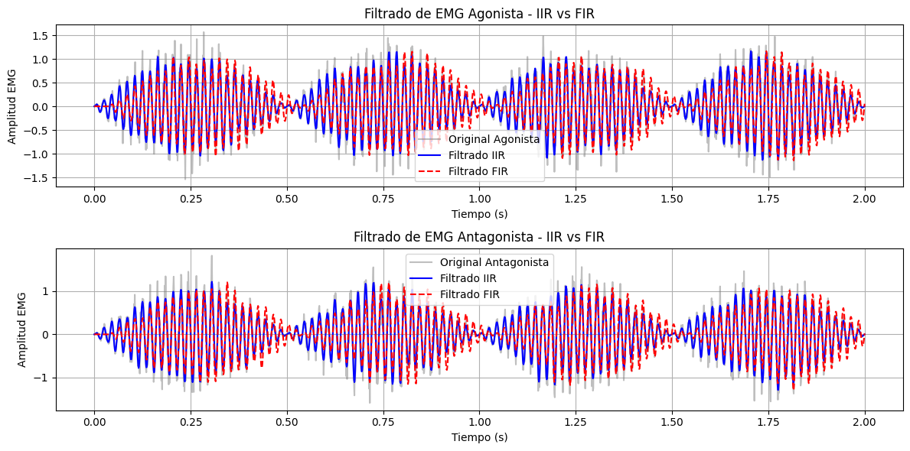
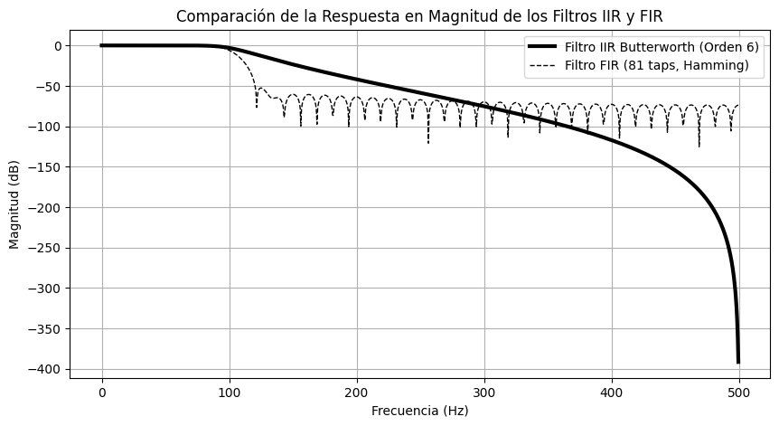

import numpy as np
import pywt
import matplotlib.pyplot as plt
import imageio
from scipy import signal
# 1. Generate a sample noisy signal
np.random.seed(0)
t = np.linspace(0, 1, 500)
original_signal = signal.sawtooth(2 * np.pi * 5 * t) # Original signal
noise = np.random.normal(0, 0.5, t.shape)
noisy_signal = original_signal + noise # Noisy signal
# 2. Define wavelet and apply wavelet transform
wavelet = "db4" # Daubechies wavelet
coeffs = pywt.wavedec(noisy_signal, wavelet, level=5)
# 3. Denoising by thresholding coefficients
threshold = 0.3 # Set threshold for denoising
coeffs_thresholded = [pywt.threshold(c, threshold * max(c)) for c in coeffs]
# 4. Initialize list for frames
frames = []
# 5. Reconstruct the signal at each thresholding level and save each frame
for i in range(1, len(coeffs_thresholded) + 1):
# Zero out coefficients above level i
coeffs_temp = coeffs_thresholded[:i] + [
np.zeros_like(c) for c in coeffs_thresholded[i:]
]
denoised_signal = pywt.waverec(coeffs_temp, wavelet)
# Plot the original, noisy, and partially denoised signal
fig, ax = plt.subplots(figsize=(8, 4))
ax.plot(t, noisy_signal, label="Noisy Signal", color="gray", alpha=0.6)
ax.plot(t, original_signal, label="Original Signal", color="black", linestyle="--")
ax.plot(t, denoised_signal, label=f"Wavelet Denoising (Level {i})", color="blue")
ax.legend()
ax.set_title(f"Wavelet Denoising Progression - Level {i}")
ax.set_xlabel("Time")
ax.set_ylabel("Amplitude")
# Save frame as image in memory
fig.canvas.draw()
image = np.frombuffer(fig.canvas.tostring_rgb(), dtype="uint8")
image = image.reshape(fig.canvas.get_width_height()[::-1] + (3,))
frames.append(image)
plt.close(fig) # Close figure to save memory
# 6. Save frames as a GIF
imageio.mimsave("wavelet_transform_denoising.gif", frames, fps=2)
print("GIF saved as 'wavelet_transform_denoising.gif'")import numpy as np
import pywt
import matplotlib.pyplot as plt
# Generate a synthetic signal with features
np.random.seed(0)
t = np.linspace(0, 1, 500)
signal = np.sin(2 * np.pi * 5 * t) # Base signal (5 Hz)
signal[100:120] += 2 # Add a spike (feature at t=0.2)
signal[300:320] -= 1.5 # Add another feature (t=0.6)
# Perform wavelet decomposition (using Daubechies 4 wavelet)
wavelet = "db4"
max_level = 5 # Maximum decomposition level
coeffs = pywt.wavedec(signal, wavelet, level=max_level)
# Plot the original signal with features
plt.figure(figsize=(10, 6))
plt.subplot(3, 1, 1)
plt.plot(t, signal, label="Original Signal with Features", color="black")
plt.title("Original Signal")
plt.xlim(0, 1)
plt.xlabel("Time")
plt.ylabel("Amplitude")
plt.legend()
# Plot the wavelet transform coefficients at different levels
for i in range(1, max_level + 1):
plt.subplot(3, 2, i + 1)
# Plot detail coefficients for the current level
# Zero out other levels to highlight the current level's detail coefficients
coeffs_temp = [
coeffs[0] if j == 0 else np.zeros_like(coeff) for j, coeff in enumerate(coeffs)
]
coeffs_temp[i] = coeffs[i] # Keep the detail coefficients for level i
# Reconstruct the signal using only the current level's details
feature_detection = pywt.waverec(coeffs_temp, wavelet)
plt.plot(
t,
feature_detection[: len(signal)],
label=f"Level {i} Feature Detection",
color="red",
)
plt.title(f"Detected Features - Level {i}")
plt.xlim(0, 1)
plt.xlabel("Time")
plt.ylabel("Amplitude")
plt.legend()
plt.tight_layout()
plt.show()import matplotlib.pyplot as plt
import numpy as np
# Configuración del vector
vx, vy = 4, 3 # Componentes del vector
# Crear la figura y los ejes
fig, ax = plt.subplots()
# Dibujar los ejes
ax.axhline(0, color="black", linewidth=0.5)
ax.axvline(0, color="black", linewidth=0.5)
# Dibujar el vector
ax.quiver(
0,
0,
vx,
vy,
angles="xy",
scale_units="xy",
scale=1,
color="blue",
)
# Dibujar el vector con estilo de línea punteada
ax.plot([0, vx], [0, 0], "k--") # Línea punteada para el vector
ax.plot(vx, 0, "ko") # Punto en el extremo del vector
ax.plot([0, 0], [0, vy], "k--") # Línea punteada para el vector
ax.plot(0, vy, "ko") # Punto en el extremo del vector
# Dibujar las proyecciones en los ejes
ax.plot([vx, vx], [0, vy], "r:")
ax.plot([0, vx], [vy, vy], "g:")
# Etiquetas para las proyecciones
ax.text(vx, -0.1, r"$X_1$", ha="center", va="top")
ax.text(-0.1, vy, r"$Y_1$", ha="right", va="center")
ax.text(vx, vy, r"$(X_1, Y_1)$", ha="left", va="bottom")
ax.text(-0.3, -0.3, "O", ha="center", va="center")
# Configurar los límites de la gráfica
ax.set_xlim(-1, vx + 2)
ax.set_ylim(-1, vy + 2)
# Añadir etiquetas y leyendas
ax.set_xlabel("x")
ax.set_ylabel("y")
ax.legend()
# Configurar la cuadrícula
ax.grid(True)
ax.set_aspect("equal")
# Mostrar el gráfico
plt.show()import numpy as np
import matplotlib.pyplot as plt
# Time vector
t = np.linspace(-3, 3, 500)
# Define the original function and its components
f_t = np.exp(t) # Original function: e^t
f_even = (np.exp(t) + np.exp(-t)) / 2 # Even part: cosh(t)
f_odd = (np.exp(t) - np.exp(-t)) / 2 # Odd part: sinh(t)
# Create the subplots
fig, axs = plt.subplots(3, 1, figsize=(10, 12), sharex=True)
# Plot the original function
axs[0].plot(t, f_t, label=r"$f(t) = e^t$", color="blue", linewidth=2)
axs[0].set_title("Original Function", fontsize=14)
axs[0].set_ylabel("Amplitude", fontsize=12)
axs[0].legend(fontsize=12)
axs[0].grid(True)
# Plot the even part
axs[1].plot(
t, f_even, label=r"$f_{\text{even}}(t) = \cosh(t)$", color="green", linewidth=2
)
axs[1].set_title("Even Part of the Function", fontsize=14)
axs[1].set_ylabel("Amplitude", fontsize=12)
axs[1].legend(fontsize=12)
axs[1].grid(True)
# Plot the odd part
axs[2].plot(t, f_odd, label=r"$f_{\text{odd}}(t) = \sinh(t)$", color="red", linewidth=2)
axs[2].set_title("Odd Part of the Function", fontsize=14)
axs[2].set_xlabel("Time (s)", fontsize=12)
axs[2].set_ylabel("Amplitude", fontsize=12)
axs[2].legend(fontsize=12)
axs[2].grid(True)
# Adjust layout
plt.tight_layout()
plt.show()import requests
response = requests.get(
"https://charts-spotify-com-service.spotify.com/public/v0/charts"
)
data = response.json()
for entry in response.json()["chartEntryViewResponses"][0]["entries"]:
meta = entry["trackMetadata"]
entry = entry["chartEntryData"]
track = meta["trackName"]
artists = ", ".join([artist["name"] for artist in meta["artists"]])
print(f"{entry['currentRank']:3} | {track:50} | {artists}")import numpy as np
import matplotlib.pyplot as plt
beta = 2 # Amplitude scaling factor
t = np.linspace(-5, 5, 400)
# Scaled functions
u_t = beta * np.heaviside(t, 1) # Amplitude-Scaled Unit Step
r_t = beta * np.maximum(t, 0) # Amplitude-Scaled Unit Ramp
sinc_t = beta * np.sinc(t) # Amplitude-Scaled Sinc
delta_t = beta * np.exp(-100 * t**2) # Amplitude-Scaled Dirac Delta (approximated)
# Plot all functions in a single figure
fig, axes = plt.subplots(2, 2, figsize=(12, 8))
# Unit Step Function
axes[0, 0].plot(t, u_t, label="Amplitude-Scaled Unit Step", linewidth=2)
axes[0, 0].set_title("Amplitude-Scaled Unit Step Function")
axes[0, 0].set_xlabel("Time (t)")
axes[0, 0].set_ylabel("Amplitude")
axes[0, 0].grid(True)
axes[0, 0].legend()
# Unit Ramp Function
axes[0, 1].plot(t, r_t, label="Amplitude-Scaled Unit Ramp", linewidth=2)
axes[0, 1].set_title("Amplitude-Scaled Unit Ramp Function")
axes[0, 1].set_xlabel("Time (t)")
axes[0, 1].set_ylabel("Amplitude")
axes[0, 1].grid(True)
axes[0, 1].legend()
# Sinc Function
axes[1, 0].plot(t, sinc_t, label="Amplitude-Scaled Sinc Function", linewidth=2)
axes[1, 0].set_title("Amplitude-Scaled Sinc Function")
axes[1, 0].set_xlabel("Time (t)")
axes[1, 0].set_ylabel("Amplitude")
axes[1, 0].grid(True)
axes[1, 0].legend()
# Dirac Delta Function
axes[1, 1].plot(t, delta_t, label="Amplitude-Scaled Dirac Delta (Approx.)", linewidth=2)
axes[1, 1].set_title("Amplitude-Scaled Dirac Delta Function (Approx.)")
axes[1, 1].set_xlabel("Time (t)")
axes[1, 1].set_ylabel("Amplitude")
axes[1, 1].grid(True)
axes[1, 1].legend()
# Adjust layout and show the plot
plt.tight_layout()
plt.show()t = np.linspace(-10,10,1000)
x = np.zeros(t.shape)
x = (
np.maximum(t + 5, 0)
- np.maximum(t + 0, 0)
- 3 * np.heaviside(t - 5, 1)
- np.maximum(t - 7.5, 0)
+ np.maximum(t-9.5, 0)
)
plt.figure(figsize=(16,6.75))
plt.plot(t,x)
plt.grid()
plt.xlabel("Time(s)")
plt.ylabel("Amplitude")# Re-import necessary libraries after execution state reset
import numpy as np
import matplotlib.pyplot as plt
# Define time range for three periods
T = 2 * np.pi # Period of sine function
t = np.linspace(-T, 2 * T, 1000) # Three periods
y = np.sin(t)
# Define one period to highlight in blue
t_highlight = np.linspace(0, T, 300)
y_highlight = np.sin(t_highlight)
# Plot the sine function
plt.figure(figsize=(12, 6))
plt.plot(t, y, label="Sine Function", linewidth=2, color="black")
plt.plot(
t_highlight, y_highlight, linewidth=3, color="blue", label="Highlighted Period"
)
# Labels and grid
plt.xlabel("Time (t)")
plt.ylabel("Amplitude")
plt.title("Sine Function Over Three Periods")
plt.axhline(0, color="black", linewidth=0.8)
plt.axvline(T, color="gray", linestyle="--", linewidth=1) # Marking one period end
plt.axvline(
2 * T, color="gray", linestyle="--", linewidth=1
) # Marking second period end
plt.grid(True, linestyle="--", alpha=0.6)
plt.legend()
# Show the plot
plt.show()# Define fundamental periods
T1 = 10 # Period of first signal
T2 = 3 # Period of second signal
# Time range covering multiple periods
t = np.linspace(0, 20, 1000)
# Define two periodic signals
x1 = np.sin((2 * np.pi / T1) * t) # First periodic signal
x2 = np.cos((2 * np.pi / T2) * t) # Second periodic signal
# Sum of both signals
x_sum = x1 + x2
# Plot signals
plt.figure(figsize=(12, 6))
plt.plot(t, x1, label=f"Signal 1: Period {T1}", linestyle="dashed")
plt.plot(t, x2, label=f"Signal 2: Period {T2}", linestyle="dotted")
plt.plot(t, x_sum, label="Sum of Signals", linewidth=2, color="black")
plt.xlabel("Time (t)")
plt.ylabel("Amplitude")
plt.title("Sum of Two Periodic Signals")
plt.axhline(0, color="gray", linewidth=0.8)
plt.grid(True, linestyle="--", alpha=0.6)
plt.legend()
plt.show()import numpy as np
import matplotlib.pyplot as plt
# Parámetros de la señal
duration = 2 # Duración en segundos
fs = 1000 # Frecuencia de muestreo en Hz
t = np.linspace(0, duration, duration * fs, endpoint=False) # Vector de tiempo
# Señal senoidal de 10 Hz
freq = 10
sine_wave = np.sin(2 * np.pi * freq * t)
# Señal de ruido aleatorio con distribución normal
noise_normal = np.random.normal(0, 1, len(t))
# Señal con ruido aleatorio de 2 a 5 Hz
low_freq_noise = np.sin(2 * np.pi * np.random.uniform(2, 5) * t)
signal_with_low_freq_noise = sine_wave + low_freq_noise
# Señal con ruido aleatorio uniforme sumado
uniform_noise = np.random.uniform(-0.5, 0.5, len(t))
signal_with_uniform_noise = sine_wave + uniform_noise
# Señal con ruido aleatorio uniforme multiplicado
multiplicative_noise = np.random.uniform(0.5, 1.5, len(t))
signal_with_mult_noise = sine_wave * multiplicative_noise
# Graficamos las señales
fig, axes = plt.subplots(5, 1, figsize=(10, 10), sharex=True)
axes[0].plot(t, sine_wave, label="Sine wave (10 Hz)")
axes[0].set_title("Sine Wave (10 Hz)")
axes[0].legend()
axes[1].plot(
t, noise_normal, label="Random Noise (Normal Distribution)", color="orange"
)
axes[1].set_title("Random Noise (Normal Distribution)")
axes[1].legend()
axes[2].plot(
t, signal_with_low_freq_noise, label="Sine + Low Freq Noise (2-5 Hz)", color="green"
)
axes[2].set_title("Sine + Low Freq Noise (2-5 Hz)")
axes[2].legend()
axes[3].plot(t, signal_with_uniform_noise, label="Sine + Uniform Noise", color="red")
axes[3].set_title("Sine + Uniform Noise")
axes[3].legend()
axes[4].plot(t, signal_with_mult_noise, label="Sine * Uniform Noise", color="purple")
axes[4].set_title("Sine * Uniform Noise")
axes[4].legend()
plt.xlabel("Time [s]")
plt.tight_layout()
plt.show()import numpy as np
import matplotlib.pyplot as plt
# Parámetros
Fs = 10 # Frecuencia de muestreo (Hz)
F1 = 3 # Frecuencia de la primera señal (Hz)
F2 = F1 + Fs # Frecuencia de la segunda señal (F1 + Fs) - Produce aliasing
T = 1 # Duración en segundos
t_continuo = np.linspace(0, T, 1000) # Tiempo continuo para la señal original
n_discreto = np.arange(0, T, 1 / Fs) # Instantes de muestreo
# Generar señales en tiempo continuo
x_continuo1 = np.cos(2 * np.pi * F1 * t_continuo)
x_continuo2 = np.cos(2 * np.pi * F2 * t_continuo)
# Generar señales muestreadas
x_discreto1 = np.cos(2 * np.pi * F1 * n_discreto)
x_discreto2 = np.cos(2 * np.pi * F2 * n_discreto)
# Crear figura con ejes alineados
fig, axs = plt.subplots(2, 1, figsize=(10, 6), sharex=True)
# Graficar señales continuas
axs[0].plot(t_continuo, x_continuo1, label=f"Frequency {F1} Hz", linestyle="dashed")
axs[0].plot(t_continuo, x_continuo2, label=f"Frequency {F2} Hz", linestyle="dotted")
axs[0].set_title("Continous-Time Signals")
axs[0].set_ylabel("Amplitude")
axs[0].legend()
axs[0].grid()
# Graficar señales muestreadas con puntos diferenciados
axs[1].stem(
n_discreto,
x_discreto1,
linefmt="k-",
markerfmt="ko",
basefmt="g-",
label=f"Samples {F1} Hz",
)
# Añadir puntos sin relleno para diferenciar la segunda señal
axs[1].scatter(
n_discreto,
x_discreto2,
facecolors="none",
edgecolors="r",
s=80,
label=f"Samples {F2} Hz",
)
axs[1].set_title("Discrete Signals (Sampled)")
axs[1].set_xlabel("Time(s)")
axs[1].set_ylabel("Amplitude")
axs[1].legend()
axs[1].grid()
plt.tight_layout()
plt.show()import numpy as np
import matplotlib.pyplot as plt
# Parámetros
Fs = 10 # Frecuencia de muestreo (Hz)
F1 = 3 # Frecuencia de la primera señal (Hz)
F2 = F1 + Fs # Frecuencia de la segunda señal (F1 + Fs) - Produce aliasing
T = 1 # Duración en segundos
t_continuo = np.linspace(0, T, 1000) # Tiempo continuo para la señal original
n_discreto = np.arange(0, T, 1 / Fs) # Instantes de muestreo
# Generar señales en tiempo continuo
x_continuo1 = np.cos(2 * np.pi * F1 * t_continuo)
x_continuo2 = np.cos(2 * np.pi * F2 * t_continuo)
# Generar señales muestreadas
x_discreto1 = np.cos(2 * np.pi * F1 * n_discreto)
x_discreto2 = np.cos(2 * np.pi * F2 * n_discreto)
plt.figure(figsize=(10, 6))
plt.plot(t_continuo, x_continuo1, label=f"Frecuencia {F1} Hz", linestyle="dashed", color="brown")
plt.plot(t_continuo, x_continuo2, label=f"Frecuencia {F2} Hz", linestyle="dotted", color="black")
plt.scatter(
n_discreto,
x_discreto1,
facecolors='none',
edgecolors='red',
s=100,
label=f"Muestras {F1} Hz",
)
plt.scatter(
n_discreto,
x_discreto2,
facecolors="blue",
edgecolors="blue",
label=f"Muestras {F2} Hz",
)
plt.title("Discrete Signals (Sampled)")
plt.xlabel("Time (s)")
plt.ylabel("Amplitude")
plt.legend()
plt.grid()
plt.show()import numpy as np
import matplotlib.pyplot as plt
from scipy.signal import freqz, butter, cheby1, firwin
def plot_filter_response(b, a=1, fs=1.0):
"""Grafica la respuesta en frecuencia de un filtro dado."""
w, h = freqz(b, a, worN=2048, fs=fs) # Calcula la respuesta en frecuencia
# Magnitud de la respuesta en frecuencia
plt.figure(figsize=(10, 6))
plt.subplot(2, 1, 1)
plt.plot(w, 20 * np.log10(abs(h)), "b")
plt.title("Respuesta en Frecuencia del Filtro")
plt.xlabel("Frecuencia [Hz]")
plt.ylabel("Magnitud [dB]")
plt.grid()
# Fase de la respuesta en frecuencia
plt.subplot(2, 1, 2)
plt.plot(w, np.angle(h), "g")
plt.xlabel("Frecuencia [Hz]")
plt.ylabel("Fase [radianes]")
plt.grid()
plt.tight_layout()
plt.show()
# Parámetros del filtro
fs = 1000 # Frecuencia de muestreo en Hz
cutoff = 200 # Frecuencia de corte en Hz
order = 4 # Orden del filtro
# Filtro IIR Butterworth
b_iir, a_iir = butter(order, cutoff, fs=fs, btype="low", analog=False)
print("Filtro IIR Butterworth")
plot_filter_response(b_iir, a_iir, fs=fs)
# Filtro FIR (ventana de Hamming)
numtaps = 51 # Número de coeficientes del FIR
b_fir = firwin(numtaps, cutoff, fs=fs, window="hamming")
print("Filtro FIR (Ventana de Hamming)")
plot_filter_response(b_fir, fs=fs)import numpy as np
import matplotlib.pyplot as plt
# Función para generar la respuesta ideal en el dominio del tiempo
def ideal_impulse_response(filter_type, fc1, fc2=None, fs=1.0, N=51):
"""
Calcula la respuesta al impulso ideal de un filtro FIR.
Parámetros:
- filter_type: Tipo de filtro ('lowpass', 'highpass', 'bandpass', 'bandstop')
- fc1: Frecuencia de corte (Hz) para LPF y HPF, Frecuencia baja para BPF y BSF
- fc2: Frecuencia alta (Hz) para BPF y BSF (no usada en LPF y HPF)
- fs: Frecuencia de muestreo (Hz)
- N: Tamaño del filtro (debe ser impar para centrado en cero)
Retorna:
- h: Respuesta al impulso en el dominio del tiempo
- n: Índices del tiempo
"""
n = np.arange(-(N // 2), (N // 2) + 1) # Centrado en n=0
# Filtro Pasa-Bajas (LPF)
if filter_type == "lowpass":
h = np.sinc(2 * fc1 * n / fs)
# Filtro Pasa-Altas (HPF)
elif filter_type == "highpass":
h = np.sinc(n) - np.sinc(2 * fc1 * n / fs)
# Filtro Pasa-Banda (BPF)
elif filter_type == "bandpass":
if fc2 is None:
raise ValueError("Se necesita fc2 para un filtro pasa-banda")
h = np.sinc(2 * fc2 * n / fs) - np.sinc(2 * fc1 * n / fs)
# Filtro Rechaza-Banda (BSF)
elif filter_type == "bandstop":
if fc2 is None:
raise ValueError("Se necesita fc2 para un filtro rechaza-banda")
h = np.sinc(n) - (np.sinc(2 * fc2 * n / fs) - np.sinc(2 * fc1 * n / fs))
else:
raise ValueError("Tipo de filtro no válido")
return h, n
# Parámetros
fs = 1000 # Frecuencia de muestreo (Hz)
fc1 = 100 # Frecuencia de corte (Hz) para LPF y HPF
fc2 = 300 # Frecuencia de corte superior para BPF y BSF
N = 51 # Orden del filtro (impar para centrado en 0)
# Calcular respuestas al impulso
filters = ["lowpass", "highpass", "bandpass", "bandstop"]
responses = {f: ideal_impulse_response(f, fc1, fc2, fs, N) for f in filters}
# Graficar respuestas
fig, axs = plt.subplots(2, 2, figsize=(12, 8))
for ax, (key, (h, n)) in zip(axs.flatten(), responses.items()):
ax.stem(n, h)
ax.set_title(f"{key.upper()} Ideal")
ax.set_xlabel("n (muestras)")
ax.set_ylabel("h[n]")
ax.grid()
plt.tight_layout()
plt.show()import numpy as np
import matplotlib.pyplot as plt
from scipy.signal import chirp
# Generate a synthetic ECG-like signal (chirp function as approximation)
fs_original = 10000 # High sampling rate (Hz) - "continuous" signal
t = np.linspace(0, 1, fs_original, endpoint=False) # 1-second signal
signal = np.sin(2 * np.pi * 1.7 * (t**2)) # Simulated chirp (similar to ECG waves)
# Downsample (Sampling Process)
fs_sampled = 200 # Sampling frequency in Hz (e.g., ECG sampled at 200 Hz)
t_sampled = np.arange(0, 1, 1 / fs_sampled)
signal_sampled = np.sin(2 * np.pi * 1.7 * (t_sampled**2))
# Quantization (8-bit and 4-bit)
def quantize(signal, bits):
levels = 2**bits
min_val, max_val = signal.min(), signal.max()
step = (max_val - min_val) / levels
quantized_signal = np.round((signal - min_val) / step) * step + min_val
return quantized_signal
signal_quantized_8bit = quantize(signal_sampled, 8)
signal_quantized_4bit = quantize(signal_sampled, 4)
# Plot Results
plt.figure(figsize=(12, 6))
# Original vs Sampled Signal
plt.subplot(2, 1, 1)
plt.plot(t, signal, "k", alpha=0.3, label="Original Signal (High Resolution)")
plt.plot(t_sampled, signal_sampled, "ro-", label=f"Sampled Signal ({fs_sampled} Hz)")
plt.xlabel("Time (s)")
plt.ylabel("Amplitude")
plt.legend()
plt.title("Sampling Process")
# Quantized Signals
plt.subplot(2, 1, 2)
plt.plot(t_sampled, signal_quantized_4bit, "ro-", alpha=0.5, label="Quantized 4-bit")
plt.plot(t_sampled, signal_quantized_8bit, "go-", alpha=0.5, label="Quantized 8-bit")
plt.plot(t_sampled, signal_sampled, "b-", alpha=0.5, label="Original Sampled")
plt.xlabel("Time (s)")
plt.ylabel("Amplitude")
plt.legend()
plt.title("Quantization Effect")
plt.tight_layout()
plt.show()import numpy as np
import matplotlib.pyplot as plt
from scipy.signal import resample, butter, filtfilt
# --- Parámetros de la Señal ---
fs_original = 20 # Frecuencia de muestreo baja (Hz)
t_original = np.linspace(0, 1, fs_original, endpoint=False) # 1 segundo de duración
freq_signal = 3 # Frecuencia de la señal en Hz
signal_original = np.sin(2 * np.pi * freq_signal * t_original) # Señal senoidal
# --- Añadir Ruido ---
noise_amplitude = 0.5
noise = noise_amplitude * np.random.randn(len(t_original)) # Ruido gaussiano
signal_noisy = signal_original + noise # Señal con ruido
# --- Aplicar Sobremuestreo ---
oversampling_factor = 5 # Aumentamos la frecuencia de muestreo 5 veces
fs_oversampled = fs_original * oversampling_factor # Nueva frecuencia de muestreo
t_oversampled = np.linspace(0, 1, fs_oversampled, endpoint=False) # Nuevo eje de tiempo
signal_oversampled = np.interp(
t_oversampled, t_original, signal_noisy
) # Interpolación lineal
# --- Filtrado de Ruido después del Sobremuestreo ---
def butter_lowpass_filter(data, cutoff, fs, order=4):
nyquist = 0.5 * fs # Frecuencia de Nyquist
normal_cutoff = cutoff / nyquist # Normalización
b, a = butter(order, normal_cutoff, btype="low", analog=False)
filtered_data = filtfilt(b, a, data) # Filtrado sin desfase
return filtered_data
cutoff_freq = (
freq_signal * 1.5
) # Frecuencia de corte del filtro (ligeramente mayor a la señal)
signal_filtered = butter_lowpass_filter(signal_oversampled, cutoff_freq, fs_oversampled)
# --- Visualización ---
plt.figure(figsize=(12, 6))
# Señal original con ruido
plt.subplot(3, 1, 1)
plt.plot(t_original, signal_noisy, "bo-", label="Señal con ruido (Baja Fs)")
plt.xlabel("Tiempo (s)")
plt.ylabel("Amplitud")
plt.legend()
plt.title("Señal Original con Ruido")
# Señal sobremuestreada con ruido
plt.subplot(3, 1, 2)
plt.plot(
t_oversampled,
signal_oversampled,
"r-",
alpha=0.7,
label=f"Sobremuestreada ({fs_oversampled} Hz)",
)
plt.xlabel("Tiempo (s)")
plt.ylabel("Amplitud")
plt.legend()
plt.title("Señal Sobremuestreada con Ruido")
# Señal sobremuestreada y filtrada
plt.subplot(3, 1, 3)
plt.plot(
t_oversampled, signal_filtered, "g-", label="Señal Filtrada (Reducción de Ruido)"
)
plt.xlabel("Tiempo (s)")
plt.ylabel("Amplitud")
plt.legend()
plt.title("Señal Filtrada después del Sobremuestreo")
plt.tight_layout()
plt.show()import random
lista = [
"a",
"b",
"c",
"d",
"e",
"f",
"g",
"h",
"i"
]
random.shuffle(lista)
print(lista)import numpy as np
import matplotlib.pyplot as plt
# Parámetros de la simulación
fs = 1000 # Frecuencia de muestreo (Hz)
T = 2 # Duración total de la simulación (s)
t = np.linspace(0, T, T * fs) # Vector de tiempo
f_emg = 50 # Frecuencia típica de la señal EMG
# Función de activación para simular el ciclo de marcha (aproximado)
def activation_pattern(t, phase_shift=0):
"""Función que simula la activación del músculo durante el ciclo de marcha."""
return np.abs(np.sin(2 * np.pi * 1 * t + phase_shift)) # 1 Hz ciclo de marcha
# Señales de EMG simuladas
np.random.seed(42)
emg_agonista = activation_pattern(t) * (np.sin(2 * np.pi * f_emg * t) + 0.3 * np.random.randn(len(t)))
emg_antagonista = activation_pattern(t, phase_shift=np.pi) * (np.sin(2 * np.pi * f_emg * t) + 0.3 * np.random.randn(len(t)))
# Graficar la señal EMG simulada
plt.figure(figsize=(10, 5))
plt.plot(t, emg_agonista, label="Músculo Agonista (Cuádriceps)", color='b')
plt.plot(t, emg_antagonista, label="Músculo Antagonista (Isquiotibiales)", color='r', alpha=0.7)
plt.xlabel("Tiempo (s)")
plt.ylabel("Amplitud EMG (mV)")
plt.title("Simulación de señal EMG durante la marcha")
plt.legend()
plt.grid()
plt.show()
# Aplicar FFT a las señales
N = len(t) # Número de puntos en la FFT
frequencies = np.fft.fftfreq(N, d=1 / fs) # Vector de frecuencias
fft_agonista = np.fft.fft(emg_agonista)
fft_antagonista = np.fft.fft(emg_antagonista)
# Magnitud y fase de la FFT (solo tomamos la parte positiva)
pos_mask = frequencies >= 0
freqs_pos = frequencies[pos_mask]
mag_agonista = np.abs(fft_agonista[pos_mask])
phase_agonista = np.angle(fft_agonista[pos_mask])
mag_antagonista = np.abs(fft_antagonista[pos_mask])
phase_antagonista = np.angle(fft_antagonista[pos_mask])
# Graficar el espectro de magnitud
plt.figure(figsize=(12, 5))
plt.subplot(2, 1, 1)
plt.plot(freqs_pos, mag_agonista, label="EMG Agonista", color="b")
plt.plot(
freqs_pos, mag_antagonista, label="EMG Antagonista", color="r", linestyle="dashed"
)
plt.xlabel("Frecuencia (Hz)")
plt.ylabel("Magnitud")
plt.title("Espectro de Magnitud de la Señal EMG")
plt.legend()
plt.grid()
# Graficar el espectro de fase
plt.subplot(2, 1, 2)
plt.plot(freqs_pos, phase_agonista, label="Fase EMG Agonista", color="b")
plt.plot(
freqs_pos,
phase_antagonista,
label="Fase EMG Antagonista",
color="r",
linestyle="dashed",
)
plt.xlabel("Frecuencia (Hz)")
plt.ylabel("Fase (radianes)")
plt.title("Espectro de Fase de la Señal EMG")
plt.legend()
plt.grid()
plt.tight_layout()
plt.show()
mag_agonista.max()np.float64(623.9382421708299)from scipy.signal import butter, filtfilt, firwin, lfilter
# Frecuencia de corte
fc = 100 # Hz
# Diseño del filtro IIR Butterworth de orden 6
order_iir = 6
b_iir, a_iir = butter(order_iir, fc / (fs / 2), btype="low", analog=False)
# Diseño del filtro FIR con 81 coeficientes (taps)
num_taps = 81
fir_coeff = firwin(num_taps, fc / (fs / 2), window="hamming")
# Filtrado de la señal EMG
emg_agonista_iir = filtfilt(b_iir, a_iir, emg_agonista)
emg_antagonista_iir = filtfilt(b_iir, a_iir, emg_antagonista)
emg_agonista_fir = lfilter(fir_coeff, 1.0, emg_agonista)
emg_antagonista_fir = lfilter(fir_coeff, 1.0, emg_antagonista)
# Graficar las señales filtradas
plt.figure(figsize=(12, 6))
plt.subplot(2, 1, 1)
plt.plot(t, emg_agonista, label="Original Agonista", color="gray", alpha=0.5)
plt.plot(t, emg_agonista_iir, label="Filtrado IIR", color="b")
plt.plot(t, emg_agonista_fir, label="Filtrado FIR", color="r", linestyle="dashed")
plt.xlabel("Tiempo (s)")
plt.ylabel("Amplitud EMG")
plt.title("Filtrado de EMG Agonista - IIR vs FIR")
plt.legend()
plt.grid()
plt.subplot(2, 1, 2)
plt.plot(t, emg_antagonista, label="Original Antagonista", color="gray", alpha=0.5)
plt.plot(t, emg_antagonista_iir, label="Filtrado IIR", color="b")
plt.plot(t, emg_antagonista_fir, label="Filtrado FIR", color="r", linestyle="dashed")
plt.xlabel("Tiempo (s)")
plt.ylabel("Amplitud EMG")
plt.title("Filtrado de EMG Antagonista - IIR vs FIR")
plt.legend()
plt.grid()
plt.tight_layout()
plt.show()
from scipy.signal import freqz
# Obtener la respuesta en frecuencia de ambos filtros
w_iir, h_iir = freqz(b_iir, a_iir, worN=1024, fs=fs)
w_fir, h_fir = freqz(fir_coeff, 1, worN=1024, fs=fs)
# Graficar la respuesta en magnitud con las especificaciones solicitadas
plt.figure(figsize=(10, 5))
# Filtro IIR
plt.plot(w_iir, 20 * np.log10(abs(h_iir)), label="Filtro IIR Butterworth (Orden 6)",
color='black', linewidth=3)
# Filtro FIR
plt.plot(w_fir, 20 * np.log10(abs(h_fir)), label="Filtro FIR (81 taps, Hamming)",
color='black', linestyle='dashed', linewidth=1)
# Configuración de etiquetas y título
plt.xlabel("Frecuencia (Hz)")
plt.ylabel("Magnitud (dB)")
plt.title("Comparación de la Respuesta en Magnitud de los Filtros IIR y FIR")
plt.legend()
plt.grid()
# Mostrar la gráfica
plt.show()